Study Area Boundaries:Latitude: 16.5 to 31.7 °NLongitude: -98.9 to -76.4 °W
Total storm observations: 13669
Unique storms: 961
Date range: 18510625 to 20230830Abstract: “Task 3 centers on hurricane risk for 25 cities in the Gulf of Mexico, using data from the Atlantic hurricane database (HURDAT2) from 1851 to 2023, provided by the National Hurricane Center. To analyze and assess this risk, we will perform 3 analyses in R to assess the hurricane risk on the Gulf of Mexico. First, we visualize and note our findings on the storm tracks over the last 25 years (1999-2024), focusing on storm paths, intensity, and duration at each location. Spatial correlation analysis will be used to explore the relationship between hurricane occurrences and contributing environmental factors, while Non-Parametric Density Estimation will estimate location-specific risk based on historical hurricane trajectories. These analyses collectively aim to identify the cities at highest risk of hurricane impact and gauge potential severity.” keywords: [Non-Parametric Density Estimation, Spatial Correlation Analysis, Hurricane Risk Assessment] format: pdf: template: GroupTask3.tex pdf-engine: lualatex keep-tex: true highlight-style: none template-partials: - before-body.tex toc: true number-sections: true cite-method: biblatex bibliography: references.bib
One of the most common natural disaster plaguing the Gulf of Mexico are Hurricanes. Just this year (2024) there has been 9 hurricanes in the Atlantic Ocean including Beryl, Helen and Milton. These storms can have lasting impacts to people’s lives, the environment, infrastructure and to the economy. Since 1980, hurricane damage has costed over $1.3 trillion in damages with an average of $22.8 billion dollars per event and 6,890 deaths [1]. Learning to predict where, when, and the intensity of hurricanes can not only save us billions of dollars but thousands of lives as well. This is especially important for cities that are at high risk such as cities like New Orleans that exists at extremely low elevations.
This task aims to use historical data on hurricanes to predict future hurricane activity and highlight cities that are at most risk. The historical hurricane data from the National Hurricane Center’s HURDAT2 database, contains hurricane data in the Atlantic from 1851 to 2023. HURDAT2 records the six-hourly information on the location, maximum winds, central pressure, and (beginning in 2004) size of all known tropical cyclones and subtropical cyclones[2]. Along with a list of 25 cities and their locations in the Gulf of Mexico, 3 analyses will be performed oh HURDAT2 to analyze and predict the storm tracks in the Gulf of Mexico.
The last 25 (1999-2024) years worth of storm tracks will be first visualized and analyzed on the over the Gulf of Mexico to identify common patterns and trends of the storm tracks. The visualization and the manual analysis provides a good general overview of how these storms move, where they are the most intense, and what places receive the most storms.
The second analysis examines how certain factors like sea surface temperatures and El Nino/La Nina patterns affect hurricane activity. Spatial correlation analysis between these factors and hurricane activity will be used to achieve this. The correlation analysis will show how certain weather phenomena can affect hurricane activity to better predict hurricane activity.
The last analysis uses non-parametric density estimation to assess the hurricane risk based on past trajectories and severity. This can provide insight on where hurricanes are more likely to appear and what routes they take. It can assess what regions will receive the most intense storms. Paired with the spatial correlation analysis, the information provided from the non-parametric density estimation can highlight what cities are most at risk in the Gulf of Mexico.
These 3 analyses can provide valuable insight to the behavior and activity of future hurricanes. Knowing the behavior and patterns of the hurricanes, knowing what cities and regions are at the most risk from hurricane activity and how different factors play a role in hurricane activity can help people better prepare for hurricanes and minimize the losses caused by these storms. Meteorologists can use these predictions to better inform people about the route, severity of storms and what to expect as it passes. Governments can use this information to predict what cities will require the most aid. Insurance companies can use this data to decide what services are best suited to a specific location.
The data source, HURDAT2, short for Hurricane Database 2 from the National Hurricane Center, provides detailed hurricane tracks from 1851 to 2023. This database records measurements of critical parameters including location coordinates, maximum wind speeds, and central pressure. Since 2004, the database has also included storm size data, enhancing our understanding of hurricane characteristics.
Our report encompasses 25 cities across the Gulf of Mexico region, representing diverse geographical and political jurisdictions. Ten U.S. cities form the northern boundary of the study area, including major metropolitan centers like New Orleans, Houston, and Miami, alongside significant coastal cities such as Tampa, Corpus Christi, Pensacola, Mobile, Galveston, Biloxi, and Key West. Along the western and southern Gulf coast, nine Mexican cities are included: Veracruz, Tampico, and Campeche serve as major ports, while Cancún represents a vital tourism center. The study also includes Mérida, Ciudad del Carmen, Progreso, Coatzacoalcos, and Tuxpan, which are crucial to Mexico’s coastal economy. The Caribbean region is represented by Havana, Varadero, and Cienfuegos, along with key island locations including Belize City, George Town, and Nassau.
Natural factors significantly influence hurricane activity in the Gulf region, with varying degrees of impact severity. Sea surface temperatures directly affect hurricane formation and intensification, while El Niño/La Niña patterns influence atmospheric conditions and storm frequency. The Atlantic Multidecadal Oscillation affects long-term hurricane activity cycles, and Saharan dust levels can suppress hurricane development. Upper-level wind patterns play a crucial role in determining storm trajectories and development potential.
Each city’s unique geographical position and environmental characteristics contribute to its specific hurricane risk profile. This research aims to quantify specific hurricane risks for each city, identify correlations between environmental factors and hurricane patterns, and develop location-specific risk assessment models.
The integration of these methods below will support and inform decision-making processes for protecting coastal communities from future hurricane impacts.
Data preparation consists of converting HURDAT2 into a workable data for analysis. To achieve this, the storm name and ID are given its own columns. For the gulf cities data, 2 additional columns were made for its longitude and latitude.
Study Area Boundaries:Latitude: 16.5 to 31.7 °NLongitude: -98.9 to -76.4 °W
Total storm observations: 13669
Unique storms: 961
Date range: 18510625 to 20230830ggplot(yearly_storms, aes(x = YEAR, y = storm_count)) +
geom_line(color = "blue") +
geom_point() +
labs(title = "year storm count from 1999-2023",
x = "Year",
y = "# of Storms")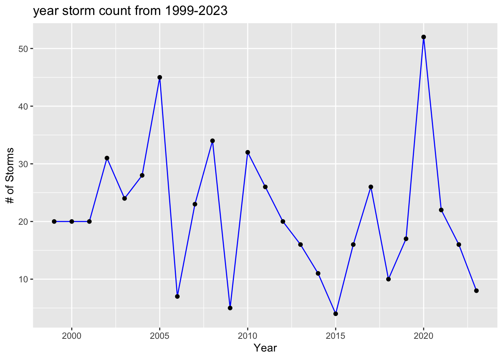
ggplot(monthly_storms, aes(x = MONTH, y = storm_count)) +
geom_col(fill = "steelblue") +
labs(title = "monthly storm freq",
x = "Month",
y = "# of Storms") +
scale_x_continuous(breaks = 1:12,
labels = c("Jan", "Feb", "Mar", "Apr", "May", "Jun",
"Jul", "Aug", "Sep", "Oct", "Nov", "Dec"))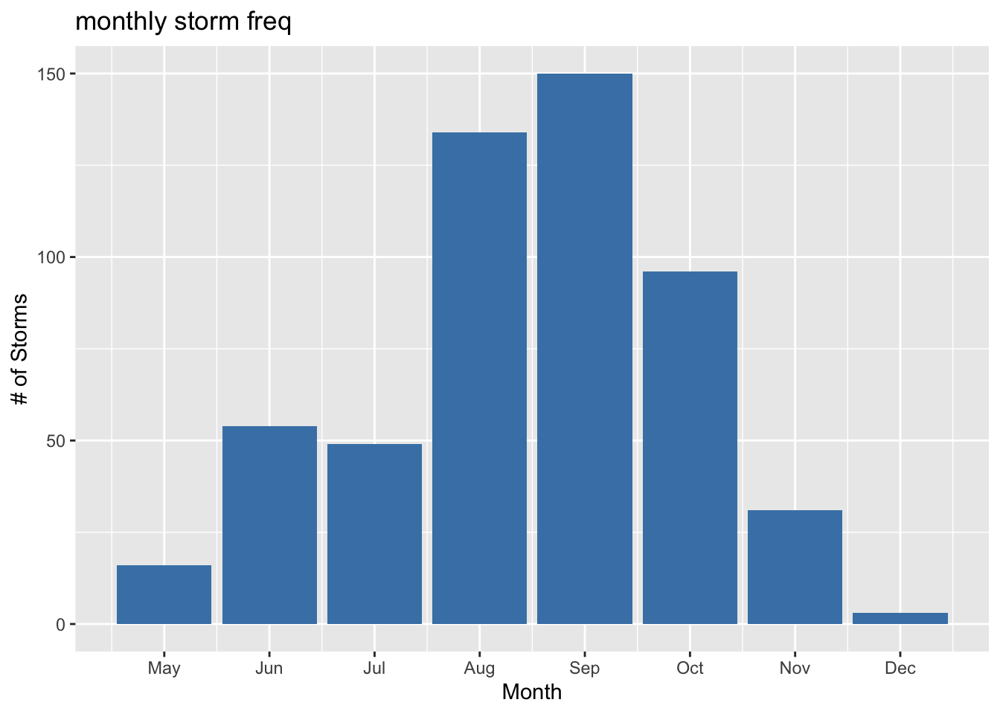
ggplot(status_count, aes(x = STATUS, y = count, fill = STATUS)) +
geom_bar(stat = "identity") +
labs(title = "strm count by status",
x = "Status",
y = "# of Storms") +
scale_fill_manual(values = c("HU" = "red", "TS" = "orange", "TD" = "blue"))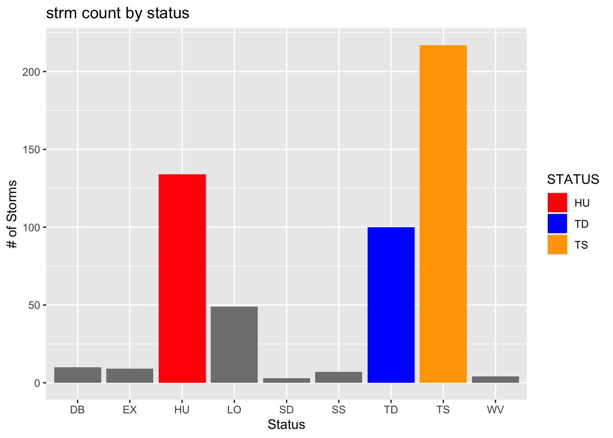
intensity_trend <- recent_gulf_storms %>%
group_by(YEAR) %>%
summarize(avg_windspeed = mean(WINDSPEED_KT, na.rm = TRUE))
ggplot(intensity_trend, aes(x = YEAR, y = avg_windspeed)) +
geom_line(color = "darkred") +
geom_point() +
labs(title = "Avg Storm Intensity Over Time 99-23",
x = "Year",
y = "Avg Wind Speed (kt)")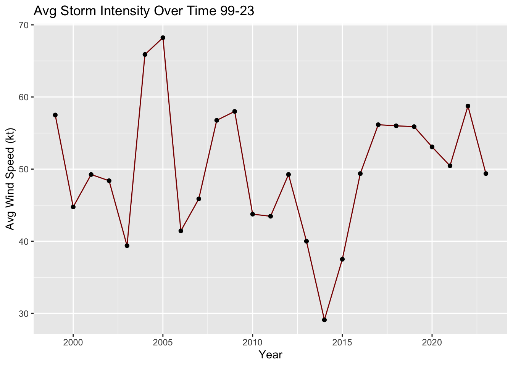
Warning: package 'ncdf4' was built under R version 4.2.3Warning: package 'tidyr' was built under R version 4.2.3Warning: package 'sp' was built under R version 4.2.3corrplot 0.94 loaded# Histograms
numeric_columns <- sapply(combined_data, is.numeric)
par(mfrow = c(3, 3)) # Arrange plots in a 3x3 grid
for (col_name in names(combined_data)[numeric_columns]) {
hist(combined_data[[col_name]],
main = paste("Histogram of", col_name),
xlab = col_name,
breaks = 20,
col = "lightblue",
border = "black")
}
# Reset plotting layout for time series
par(mfrow = c(1, 1)) 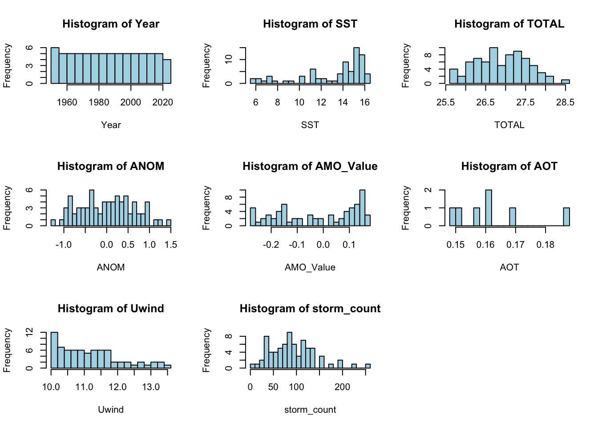
# Time Series Plots
time_series_vars <- c("SST", "AOT", "AMO_Value", "TOTAL", "storm_count", "Uwind")
for (var in time_series_vars) {
if (var %in% names(combined_data)) {
plot(combined_data$Year, combined_data[[var]], type = "l", col = "blue",
main = paste(var, "Over Time"),
xlab = "Year",
ylab = var)
points(combined_data$Year, combined_data[[var]], pch = 19, col = "darkblue")
}
}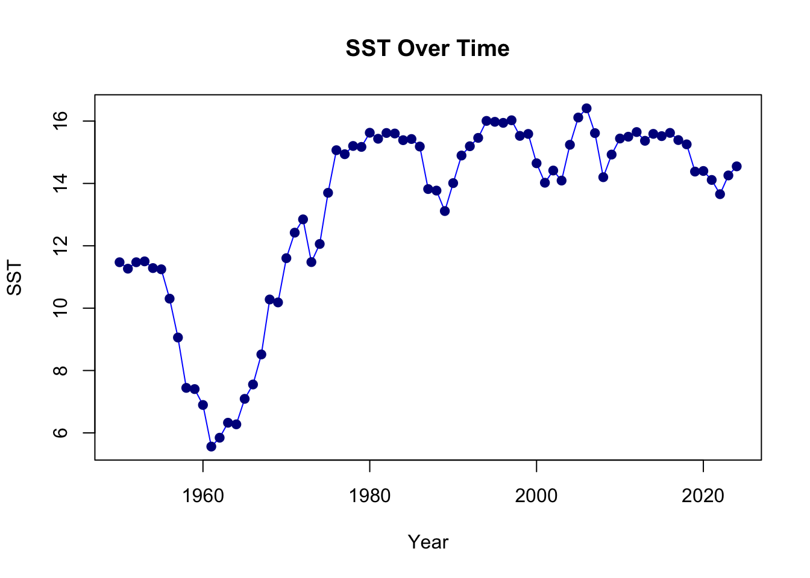
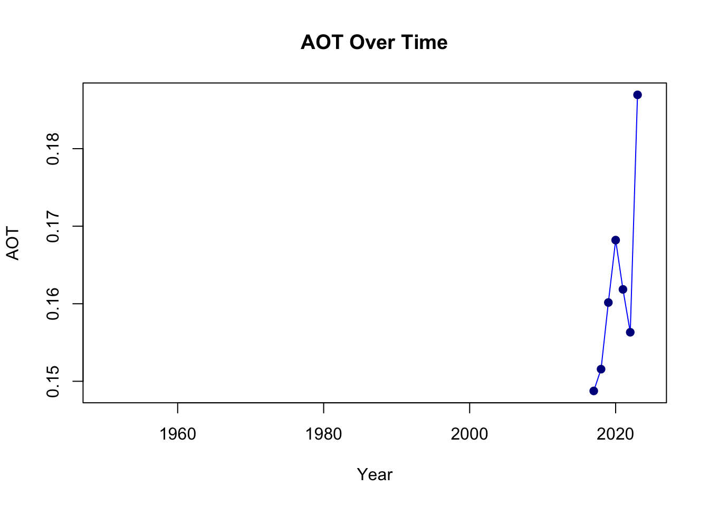
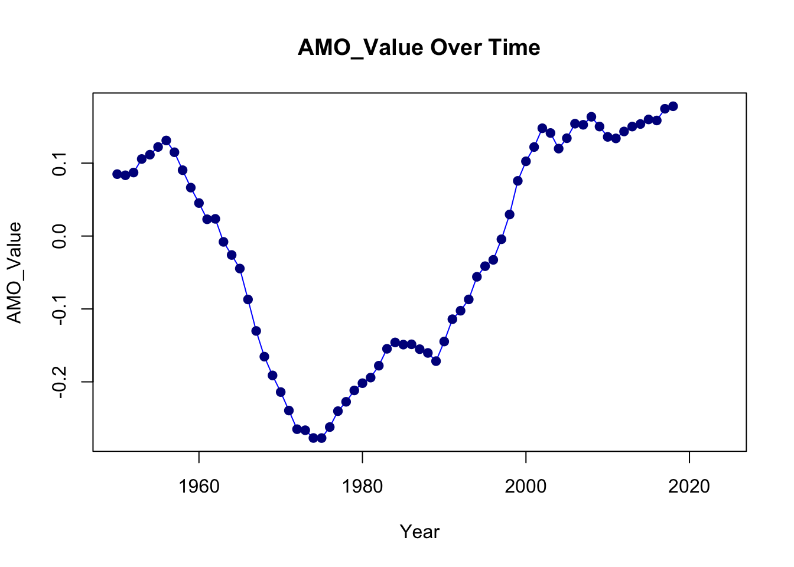
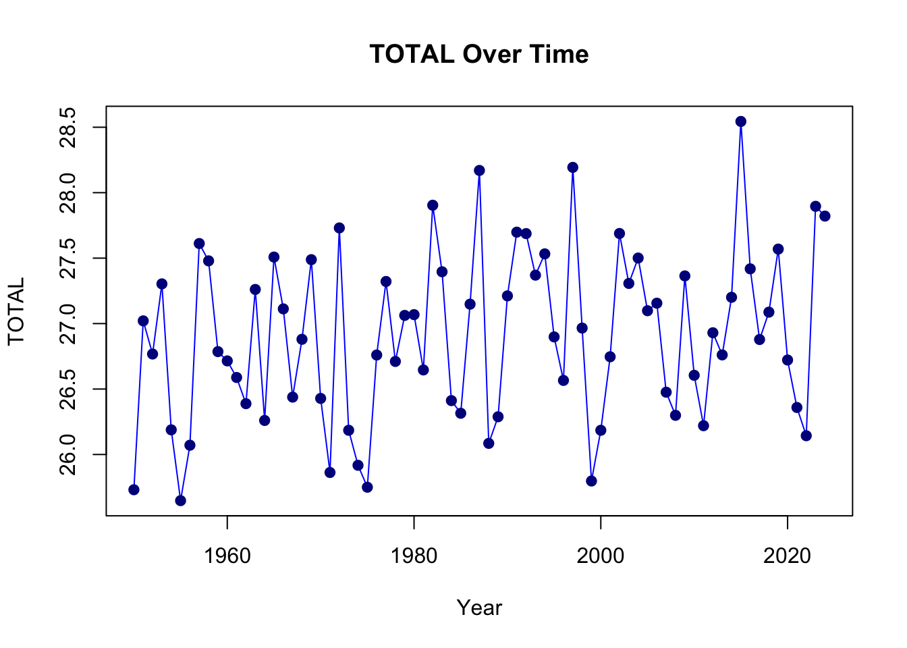
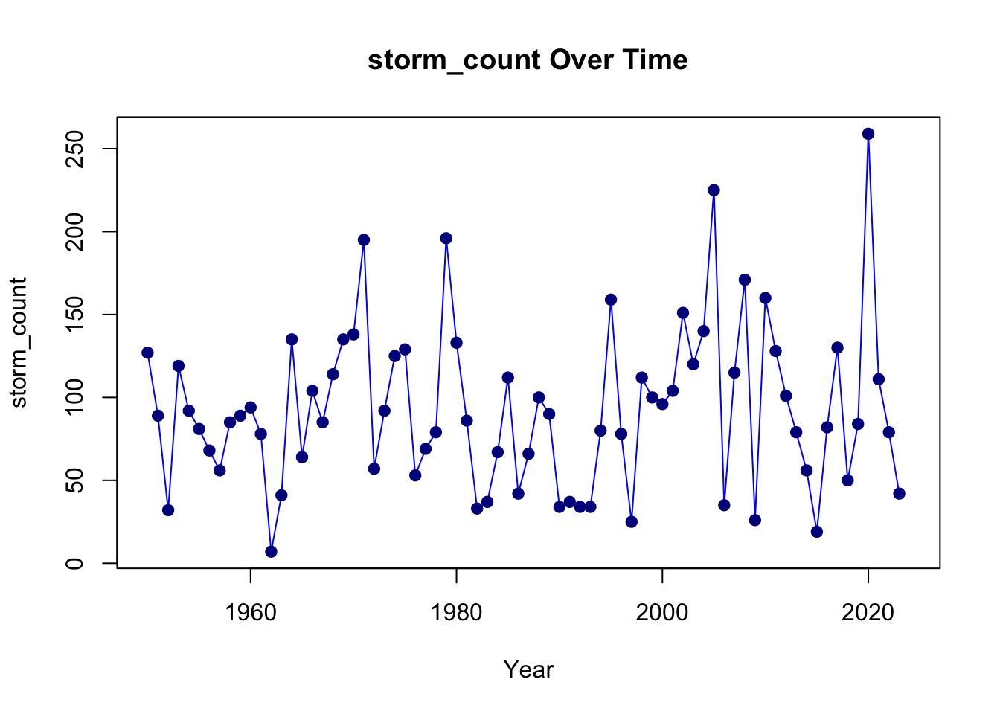
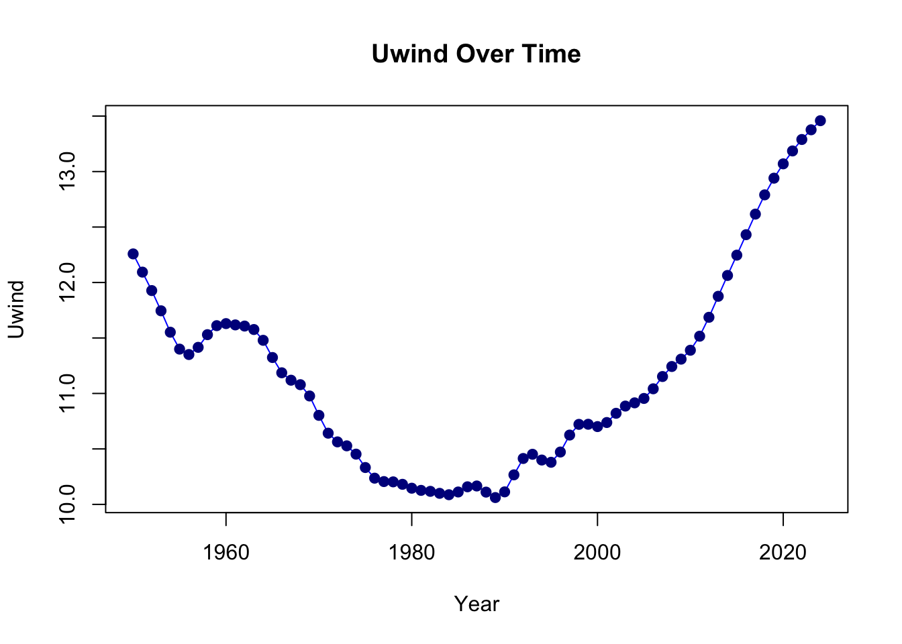
# Correlation Analysis
correlation_matrix <- cor(combined_data[, c("storm_count", "SST", "TOTAL", "ANOM", "AMO_Value", "AOT", "Uwind")], use = "pairwise.complete.obs")
print(correlation_matrix) storm_count SST TOTAL ANOM AMO_Value
storm_count 1.00000000 0.06919577 -0.3695591 -0.40529174 0.01283637
SST 0.06919577 1.00000000 0.1798988 -0.05300834 0.01500701
TOTAL -0.36955906 0.17989880 1.0000000 0.95811574 0.06355720
ANOM -0.40529174 -0.05300834 0.9581157 1.00000000 -0.00546696
AMO_Value 0.01283637 0.01500701 0.0635572 -0.00546696 1.00000000
AOT -0.03307735 -0.44745935 0.5248291 0.52447399 1.00000000
Uwind 0.04812958 -0.18362675 0.0506099 0.01684899 0.74115033
AOT Uwind
storm_count -0.03307735 0.04812958
SST -0.44745935 -0.18362675
TOTAL 0.52482911 0.05060990
ANOM 0.52447399 0.01684899
AMO_Value 1.00000000 0.74115033
AOT 1.00000000 0.74058853
Uwind 0.74058853 1.00000000corrplot(correlation_matrix, method = "circle")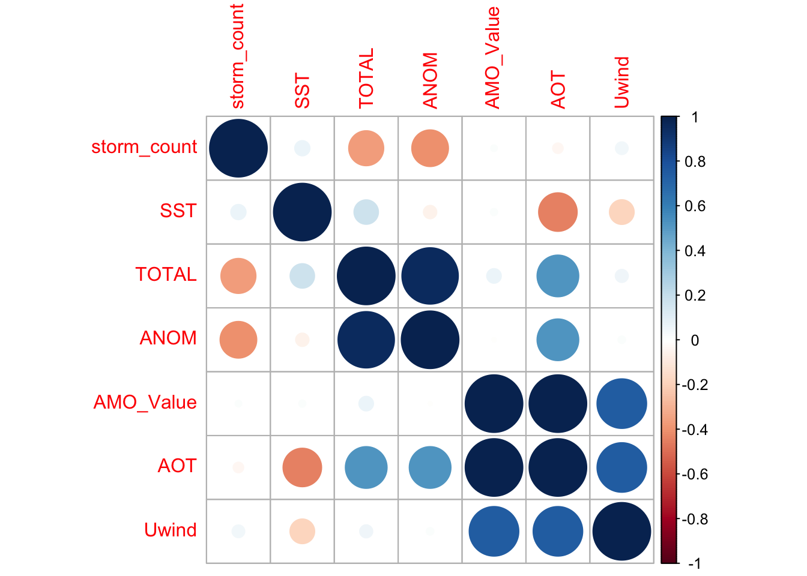
# Regression models
variables_to_analyze <- c("SST", "TOTAL", "ANOM", "AMO_Value", "AOT", "Uwind")
for (var in variables_to_analyze) {
current_data <- combined_data %>%
filter(!is.na(.data[[var]]) & !is.na(storm_count))
if (nrow(current_data) > 0) {
model <- lm(as.formula(paste("storm_count ~", var)), data = current_data)
cat("\n\nLinear Model for Storm Count ~", var, ":\n")
print(summary(model)) # Print model summary
}
}
Linear Model for Storm Count ~ SST :
Call:
lm(formula = as.formula(paste("storm_count ~", var)), data = current_data)
Residuals:
Min 1Q Median 3Q Max
-77.420 -34.402 -1.918 27.822 165.070
Coefficients:
Estimate Std. Error t value Pr(>|t|)
(Intercept) 77.921 25.528 3.052 0.00318 **
SST 1.112 1.889 0.589 0.55800
---
Signif. codes: 0 '***' 0.001 '**' 0.01 '*' 0.05 '.' 0.1 ' ' 1
Residual standard error: 48.97 on 72 degrees of freedom
Multiple R-squared: 0.004788, Adjusted R-squared: -0.009034
F-statistic: 0.3464 on 1 and 72 DF, p-value: 0.558
Linear Model for Storm Count ~ TOTAL :
Call:
lm(formula = as.formula(paste("storm_count ~", var)), data = current_data)
Residuals:
Min 1Q Median 3Q Max
-99.83 -30.55 -11.62 17.18 161.49
Coefficients:
Estimate Std. Error t value Pr(>|t|)
(Intercept) 844.711 222.939 3.789 0.000311 ***
TOTAL -27.962 8.286 -3.375 0.001193 **
---
Signif. codes: 0 '***' 0.001 '**' 0.01 '*' 0.05 '.' 0.1 ' ' 1
Residual standard error: 45.61 on 72 degrees of freedom
Multiple R-squared: 0.1366, Adjusted R-squared: 0.1246
F-statistic: 11.39 on 1 and 72 DF, p-value: 0.001193
Linear Model for Storm Count ~ ANOM :
Call:
lm(formula = as.formula(paste("storm_count ~", var)), data = current_data)
Residuals:
Min 1Q Median 3Q Max
-92.648 -31.024 -5.589 18.170 154.796
Coefficients:
Estimate Std. Error t value Pr(>|t|)
(Intercept) 92.855 5.217 17.798 < 2e-16 ***
ANOM -31.598 8.400 -3.762 0.000341 ***
---
Signif. codes: 0 '***' 0.001 '**' 0.01 '*' 0.05 '.' 0.1 ' ' 1
Residual standard error: 44.87 on 72 degrees of freedom
Multiple R-squared: 0.1643, Adjusted R-squared: 0.1527
F-statistic: 14.15 on 1 and 72 DF, p-value: 0.0003408
Linear Model for Storm Count ~ AMO_Value :
Call:
lm(formula = as.formula(paste("storm_count ~", var)), data = current_data)
Residuals:
Min 1Q Median 3Q Max
-84.113 -35.469 -2.346 28.428 133.456
Coefficients:
Estimate Std. Error t value Pr(>|t|)
(Intercept) 91.021 5.602 16.249 <2e-16 ***
AMO_Value 3.898 37.096 0.105 0.917
---
Signif. codes: 0 '***' 0.001 '**' 0.01 '*' 0.05 '.' 0.1 ' ' 1
Residual standard error: 46.11 on 67 degrees of freedom
Multiple R-squared: 0.0001648, Adjusted R-squared: -0.01476
F-statistic: 0.01104 on 1 and 67 DF, p-value: 0.9166
Linear Model for Storm Count ~ AOT :
Call:
lm(formula = as.formula(paste("storm_count ~", var)), data = current_data)
Residuals:
1 2 3 4 5 6 7
19.63 -59.84 -24.20 152.33 3.12 -29.93 -61.11
Coefficients:
Estimate Std. Error t value Pr(>|t|)
(Intercept) 138.7 417.4 0.332 0.753
AOT -190.2 2570.3 -0.074 0.944
Residual standard error: 80.49 on 5 degrees of freedom
Multiple R-squared: 0.001094, Adjusted R-squared: -0.1987
F-statistic: 0.005477 on 1 and 5 DF, p-value: 0.9439
Linear Model for Storm Count ~ Uwind :
Call:
lm(formula = as.formula(paste("storm_count ~", var)), data = current_data)
Residuals:
Min 1Q Median 3Q Max
-86.798 -36.380 -5.447 27.295 161.326
Coefficients:
Estimate Std. Error t value Pr(>|t|)
(Intercept) 63.025 72.478 0.870 0.387
Uwind 2.651 6.484 0.409 0.684
Residual standard error: 49.03 on 72 degrees of freedom
Multiple R-squared: 0.002316, Adjusted R-squared: -0.01154
F-statistic: 0.1672 on 1 and 72 DF, p-value: 0.6839The first chart shows the amount of storms that occur during each year from 1999 to 2023. There is no clear pattern for this, as the amount of storms per year is very variable. Storm count can be as low as 5 storms in a year to over 50 storms in a year.The second graph shows the frequency of storms by month. Storms tend to peak during the summer months, mainly August, September and October and is usually the lowest during winter to early spring, mainly December, January, February and March. This makes sense on a scientific standpoint as hurricanes are fueled by warm ocean water and summer is usually when the water is the warmest in the year. The third chart shows the frequency of storms based on their type:Tropical Wave, Tropical Depression, Tropical Storm, Hurricane, Extratropical Cyclone, Subtropical Depression, Subtropical Storm, Low Pressure System, and Non-Tropical Disturbance. Tropical storms being the most common followed by hurricanes and tropical depressions. Subtropical Depression is the least common.This could show that more intense storms are more common in the Gulf of Mexico, which can mean higher overall risk for cities that get frequent storms. The last chart shows the average wind speed per year. Most years, the average windspeed ranges between 40kt-60kt. With 2005 followed by 2004 to be the highest years with approximately 68kt and 66kt. The lowest year is 2015 with the average wind speed being 29kt. The average windspeeds after 2016 seems to increased overall as well.
Method 1: Kernel Density Estimation
library(MASS)Warning: package 'MASS' was built under R version 4.2.3
Attaching package: 'MASS'The following object is masked from 'package:dplyr':
selectlibrary(fields)Loading required package: spamSpam version 2.10-0 (2023-10-23) is loaded.
Type 'help( Spam)' or 'demo( spam)' for a short introduction
and overview of this package.
Help for individual functions is also obtained by adding the
suffix '.spam' to the function name, e.g. 'help( chol.spam)'.
Attaching package: 'spam'The following objects are masked from 'package:base':
backsolve, forwardsolveLoading required package: viridisLite
Try help(fields) to get started.
Attaching package: 'fields'The following object is masked from 'package:leaflet':
addLegendkde <- kde2d(
gulf_storms$LONGITUDE,
gulf_storms$LATITUDE,
n = 100,
lims = c(range(gulf_storms$LONGITUDE), range(gulf_storms$LATITUDE))
)
# risk scores for cities
city_risks <- interp.surface(
list(x = kde$x, y = kde$y, z = kde$z),
cbind(gulf_cities$Longitude, gulf_cities$Latitude)
)
# results dataframe
kde_results <- data.frame(
City = gulf_cities$City,
Risk_Score = city_risks
)
# normalize scores
kde_results$Risk_Score <- scale(kde_results$Risk_Score)
# sort by risk
kde_results <- kde_results[order(-kde_results$Risk_Score),]
# results
ggplot(kde_results, aes(x = reorder(City, Risk_Score), y = Risk_Score)) +
geom_col(fill = "steelblue") +
coord_flip() +
theme_minimal() +
labs(title = "Hurricane Risk by City (KDE Method)",
x = "City",
y = "Risk Score")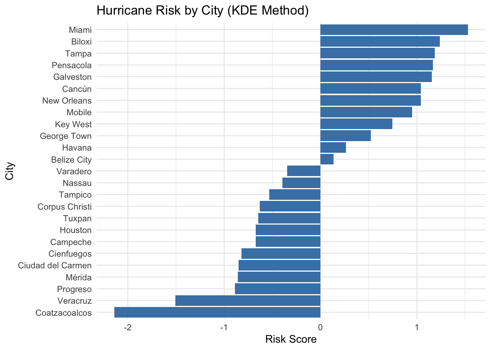
print(kde_results) City Risk_Score
4 Miami 1.5299257
9 Biloxi 1.2378910
3 Tampa 1.1834084
6 Pensacola 1.1647664
8 Galveston 1.1529661
14 Cancún 1.0404859
1 New Orleans 1.0392818
7 Mobile 0.9484052
10 Key West 0.7464416
24 George Town 0.5207791
20 Havana 0.2651960
23 Belize City 0.1341340
21 Varadero -0.3464843
25 Nassau -0.3943527
12 Tampico -0.5339097
5 Corpus Christi -0.6316713
19 Tuxpan -0.6475624
2 Houston -0.6716486
13 Campeche -0.6718997
22 Cienfuegos -0.8190881
16 Ciudad del Carmen -0.8506388
15 Mérida -0.8569356
17 Progreso -0.8900332
11 Veracruz -1.5086580
18 Coatzacoalcos -2.1407987Method 2: K-Nearest Neighbors
library(geosphere)
k <- 30 # number of nearest storms to consider
risks <- sapply(1:nrow(gulf_cities), function(i) {
# distances to all storms
dists <- distHaversine(
cbind(gulf_cities$Longitude[i], gulf_cities$Latitude[i]),
cbind(gulf_storms$LONGITUDE, gulf_storms$LATITUDE)
)
# k nearest storms
nearest <- order(dists)[1:k]
mean(gulf_storms$WINDSPEED_KT[nearest]) # use average windspeed as risk measure
})
# results dataframe
knn_results <- data.frame(
City = gulf_cities$City,
Risk_Score = risks
)
# normalize scores
knn_results$Risk_Score <- scale(knn_results$Risk_Score)
# sort by risk
knn_results <- knn_results[order(-knn_results$Risk_Score),]
# results
ggplot(knn_results, aes(x = reorder(City, Risk_Score), y = Risk_Score)) +
geom_col(fill = "steelblue") +
coord_flip() +
theme_minimal() +
labs(title = "Hurricane Risk by City (KNN Method)",
x = "City",
y = "Risk Score")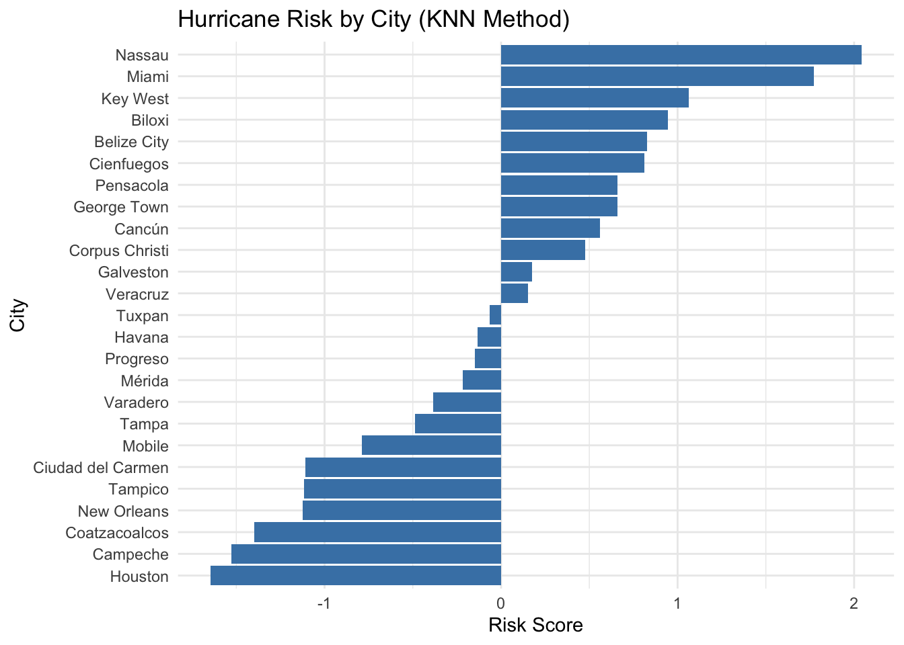
print(knn_results) City Risk_Score
25 Nassau 2.04245419
4 Miami 1.77268082
10 Key West 1.06452572
9 Biloxi 0.94649987
23 Belize City 0.82847402
22 Cienfuegos 0.81161318
6 Pensacola 0.65986566
24 George Town 0.65986566
14 Cancún 0.55870065
5 Corpus Christi 0.47776864
8 Galveston 0.17427360
11 Veracruz 0.15404059
19 Tuxpan -0.06515027
20 Havana -0.13259361
17 Progreso -0.14945445
15 Mérida -0.21689779
21 Varadero -0.38550615
3 Tampa -0.48667116
7 Mobile -0.79016620
16 Ciudad del Carmen -1.11052208
12 Tampico -1.11726641
1 New Orleans -1.12401075
18 Coatzacoalcos -1.39715628
13 Campeche -1.52867080
2 Houston -1.64669665=======
In analyzing hurricane risk across the Gulf of Mexico region, we used two distinct analytical approaches, Kernel Density Estimation (KDE) and K-Nearest Neighbors (KNN).
Kernel Density Estimation demonstrates notable effectiveness in capturing broad regional patterns, particularly along the U.S. Gulf Coast. The method identifies Miami (1.53), Biloxi (1.24), and Tampa (1.18) as high-risk areas, aligning with historically observed hurricane patterns in these regions. This approach appears to effectively capture the traditional understanding of Gulf Coast vulnerability, showing a consistent gradient of risk that decreases from the eastern U.S. coastline toward the western Gulf regions. Significantly, KDE identifies Coatzacoalcos (-2.14) and Veracruz (-1.51) as lowest-risk areas, suggesting a clear north-south divide in hurricane vulnerability.
In contrast, the K-Nearest Neighbors approach presents a markedly different risk distribution. This method ranks Nassau (2.04) and Miami (1.77) as the highest-risk locations, while placing western cities like Houston (-1.65) and Campeche (-1.53) at the lower end of the risk spectrum. KNN’s assessment appears more sensitive to individual storm characteristics and extreme events, potentially better reflecting the impact of recent hurricane patterns rather than historical trends. The method’s city-by-city analysis provides a more granular view of risk, though it sometimes contradicts traditional understanding of regional vulnerability.
The biggest contrast between these methods appears in their treatment of specific locations. Nassau is an example of this, ranking highest in KNN (2.04) but showing negative risk (-0.39) in KDE. Similarly, U.S. Gulf Coast cities receive consistently high scores in KDE but show more varied results in KNN, with some traditionally high-risk areas receiving surprisingly low scores. These differences highlight how each method weighs various risk factors: KDE emphasizes geographical patterns and storm frequency, while KNN focuses more on storm intensity and proximity.
Despite their differences, both methods agree on certain fundamental patterns, particularly the lower risk levels in the western Gulf region. This adds credibility to both approaches while suggesting that comprehensive risk assessment should incorporate both methodologies.
Discuss the implications and significance here
Conclusion Here
[1] National Oceanic and Atmospheric Administration. 2023. Hurricane Costs. NOAA, Office for Coastal Management. Retrieved October 16, 2024, from https://coast.noaa.gov/states/fast-facts/hurricane-costs.html[1] National Oceanic and Atmospheric Administration. 2023. Hurricane Costs. NOAA, Office for Coastal Management. Retrieved October 16, 2024, from https://coast.noaa.gov/states/fast-facts/hurricane-costs.html
[2] National Hurricane Center. 2023. Data Archive. NOAA, National Oceanic and Atmospheric Administration. Retrieved October 16, 2024, from https://www.nhc.noaa.gov/data/
[3] NOAA Physical Sciences Laboratory. 2023. NOAA Extended Reconstructed Sea Surface Temperature (ERSST) v4. Retrieved November 7, 2024, from https://downloads.psl.noaa.gov/Datasets/noaa.ersst.v4/. Original data source: B. Huang, et al., Extended Reconstructed Sea Surface Temperature version 4 (ERSST.v4): Part I. Upgrades and Intercomparisons, J. Clim., 28, 911-930, 2015.
[4] NOAA Climate Prediction Center. 2023. Oceanic Niño Index (ONI). Retrieved November 7, 2024, from https://www.cpc.ncep.noaa.gov/data/indices/oni.ascii.txt.
[5] NOAA Physical Sciences Laboratory. 2023. Atlantic Multidecadal Oscillation (AMO) - Smoothed, Short (1948 to Jan 2023). Retrieved November 7, 2024, from https://psl.noaa.gov/data/timeseries/AMO/
[6] Copernicus Climate Change Service (C3S). 2023. Satellite Aerosol Properties Dataset. Retrieved November 7, 2024, from https://cds.climate.copernicus.eu/datasets/satellite-aerosol-properties?tab=download.
[7] NOAA Physical Sciences Laboratory. 2023. NCEP/NCAR Reanalysis Project. Retrieved November 7, 2024, from https://psl.noaa.gov/data/gridded/data.ncep.reanalysis.html. Original data source: R. Kalnay et al., The NCEP/NCAR 40-year reanalysis project, Bull. Amer. Meteor. Soc., 77, 437–470, 1996.